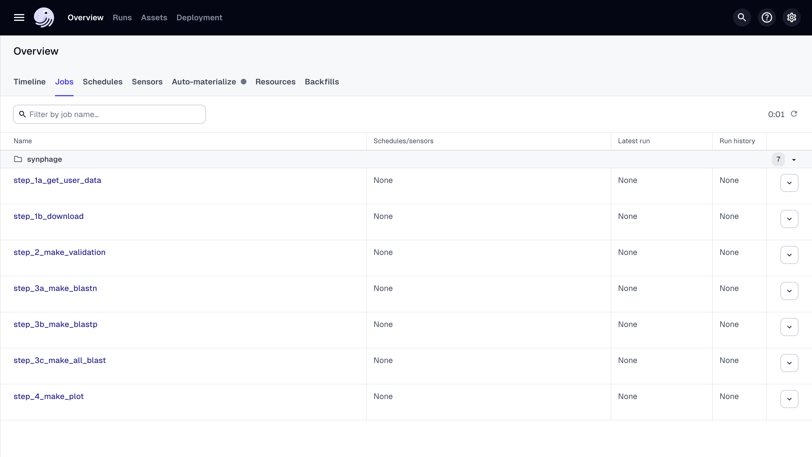
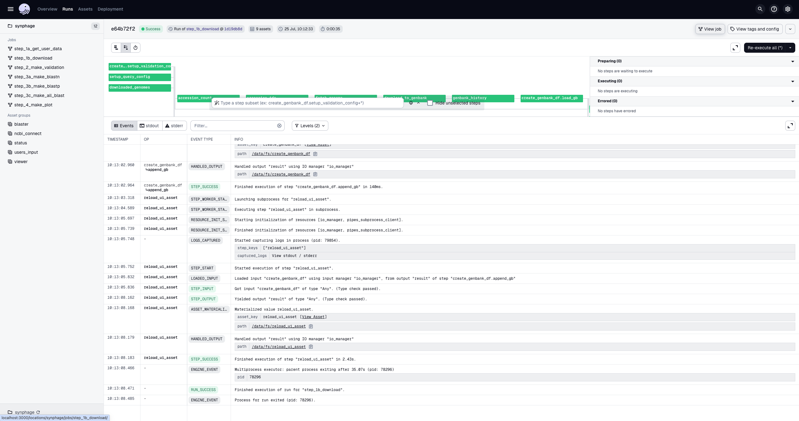
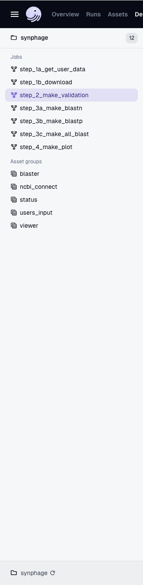
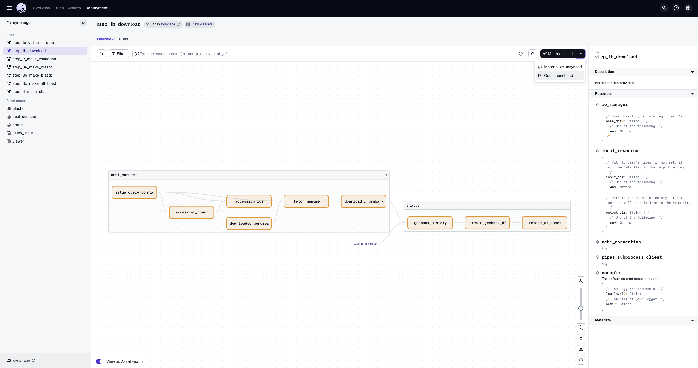
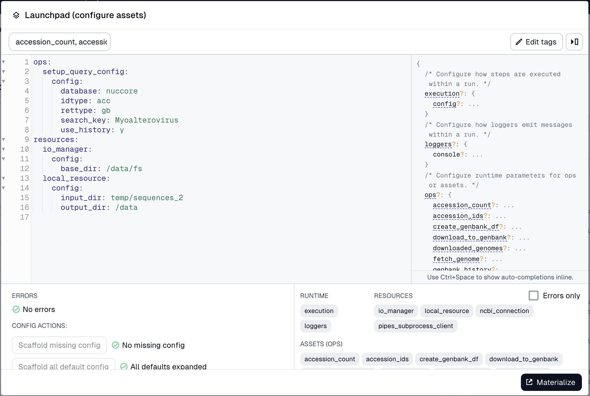
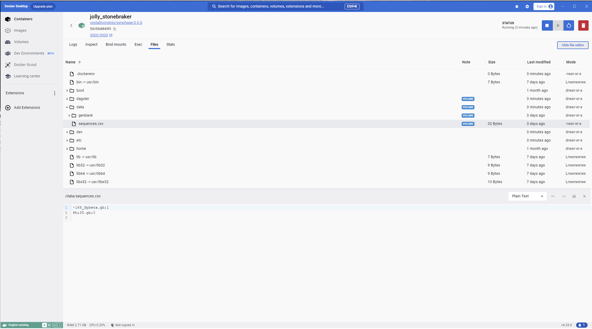
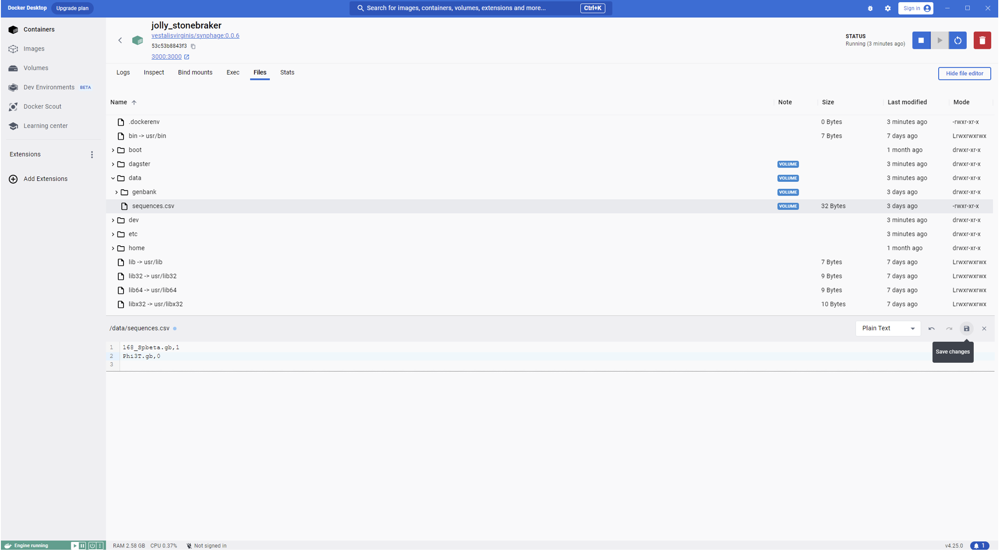
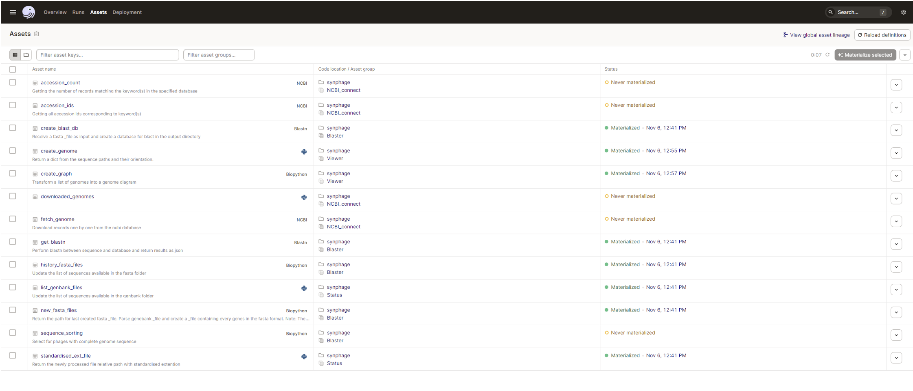

You need to have synphage installed in a python environment or in a docker container or to have pulled synphage docker image. Start synphage and open the Dagster UI in your browser to get started.
To navigate to the jobs, go to
Dagster_home -> Jobs

Dagster shutting down
Whenever you are lost, go back to the
to get back on track.
For the steps that requires to open th Launchpad, after selecting Materialize you will automatically brought to the page where the job is running. To go back to the previous page you can either select View jobs on the top right of the page or select the job you are running on the left panel.

View after selecting `Materialize`. Select `View jobs`to go back.

The left panel displays the list of jobs. To go back select the job you are currently running.
Software structure
synphage pipeline is composed of four steps that need to be run sequencially:
- step 1: loading the data
- step 2: validating the data
- step 3: blasting the data
- step 4: ploting the data
Step 1: Loading the data into the pipeline
The step 1 is composed of two sub-steps :
- step_1a_get_user_data, for loading user's data into the pipeline
- step_1b_download, for downloading data from the NCBI
GenBank files are loaded into the pipeline from the input_folder setup by the user and/ordownloaded from the NCBI database.
Tip
Only one of the following jobs, step_1a or step_1b is required to successfully run step 1.
step_1a: step_1a_get_user_data
Description
This job allows the users to upload their own data / data stored locally into the pipeline.
During this step, the GenBank files are loaded into the pipeline and filenames are harmonised (remove spaces, dots) to avoid failure during the downstream processing. The information contained in each file is processed and the raw data is stored in a parquet file (./tables/genbank_db). This information will be further processed at step 2.
Step 1a schematic representation
In practice Requires: GenBank files
To run the job, no configuration is required at this stage. Select Materialize all on the top right corner of the main panel to run the job. Once the job is complete, all the assets will turn green. You can then select invidual assets to check the metadata generated by the asset.
Once the job is completed, you can:
add more files and re-run step 1a
download additional file, running step 1b
run step 2
step_1b: step_1b_download
Description
Run this job to download genomes to be analysed from the NCBI database (same combinaison of keywords can be used as in the ncbi website). The keyword(s) are passed to the job configuration.
Success
This job requires to have the EMAIL and API_KEY environnmental variables set in order to access the NCBI database.
(For more information, check the documention via pip, with Docker Desktop and via docker CLI).
During this step, the GenBank files are downloaded from the NCBI database into the pipeline and filenames are harmonised (remove spaces, dots) to avoid failure during the downstream processing. The information contained in each file is processed and the raw data is stored in a parquet file (path: ./tables/genbank_db). This information will be further processed at step 2.
Step 1b schematic representation
In practice
To run this job, you first need to set your keywords for the NCBI database query. Click the arrow on the right side of the materialise all botton to access the drop-down menu and select Open launchpad.
 How to open the launchpad
 Configuration panel for the download
Select Materialize on the bottom left corner of the launchpad. Once the job is complete, all the assets will turn green. You can then select invidual assets to check the metadata generated by the asset. (Check our step-by-step example.)
Once the job is completed, you can:
- start another query, re-running step 1b
- add locally stored files and run step 1a
- run step 2
Tip
If both step 1a and 1b are run, the data is combined in the parquet file.
Step 2: Data validation
Completeness of the data is validated at this step.
This step is composed of 1 job and the job visualisation (graph) will be updated after each step 1 run showing all the sequences present in the pipeline:
- step_2_make_validation, for performing checks and transformations on the dataset that are required for downstream processing
Failure
This step is required and cannot be skipped.
Description
Run a validation on the dataset.
Step 2 schematic representation before loading any sequences in the pipeline Step 2 schematic representation after loading sequences in the pipeline and reloading the UI
This step checks what features are present in the GenBank files (gene and CDS, only gene, only CDS) and select an attribute to be used as unique identifier for each coding region.
Warning
Dataset which does not complete this step are excluded from the downstream processing. This step aims to prevent failure at step 3 and 4 due to a low quality dataset.
In practice Requires: step 1
To run the job, no configuration is required at this stage. Select Materialize all on the top right corner of the main panel to run the job. Once the job is complete, all the assets will turn green. You can then select invidual assets to check the metadata generated by the asset. (Check our step-by-step example.)
Once the job is completed, you can:
run step 3
Step 3: Blasting the data
The step 3 is composed of two sub-steps and three different options are available:
- step_3a_make_blastn, for running a Nucleotide BLAST on the dataset
- step_3b_make_blastp, for running a Protein BLAST on the dataset
- step_3c_make_all_blast, for running both, Nucleotide and Protein BLAST simultaneously
A blast is performed at this step of the pipeline using the blast+ tool from the ncbi and the users can choose to perform either a blastn, or a blastp, or both simultaneously or sequentially (running for example, 3a and then 3b).
Tip
Only one of the above jobs is required to successfully run step 3.
Both step_3a_make_blastn and step_3b_make_blastp jobs can be run sequencially, mainly in the case where the user decide to run the second job based on the results obtained for the first one.
step_3a: step_3a_make_blastn
Description
A blastn against each other sequences is performed at this step. The resulting fasta files, blast database and blastn output files are saved in ./gene_identity/.
Step 3a schematic representation
After performing the blast, the output json files are processed and the blast information is used to join information about queried sequences and hit sequences. The resulting parquet file is stored as ./tables/gene_uniqueness.parquet.
This file is used to build the synteny diagram and can also be queried by the user to retrieve further information about unique and conserved genes (For more details, read our step-by-step example.)
In practice
Requires: step 2
To run the job, no configuration is required at this stage. Select Materialize all on the top right corner of the main panel to run the job. Once the job is complete, all the assets will turn green. You can then select invidual assets to check the metadata generated by the asset. (Check our step-by-step example.)
Once the job is completed, you can:
- run step 3b
- run step 4
step_3b: step_3b_make_blastp
Description
A blastp against each other sequences is performed at this step. The resulting fasta files, blast database and blastp output files are saved in ./protein_identity/.
Step 3b schematic representation
After performing the blast, the output json files are processed and the blast information is used to join information about queried sequences and hit sequences. The resulting parquet file is stored as ./tables/protein_uniqueness.parquet.
This file is used to build the synteny diagram and can also be queried by the user to retrieve further information about unique and conserved genes (For more details, read our step-by-step example.)
In practice Requires: step 2
To run the job, no configuration is required at this stage. Select Materialize all on the top right corner of the main panel to run the job. Once the job is complete, all the assets will turn green. You can then select invidual assets to check the metadata generated by the asset.
Once the job is completed, you can:
run step 3a
run step 4
step_3c: step_3c_make_all_blast
Description
A blastn and a blastp against each other sequences is performed at this step. The resulting fasta files, blast database and, blastn nad blastp output files are saved in ./gene_identity/ and ./protein_identity/ respectively.
Step 3c schematic representation
After performing the blast, the output json files are processed and the blast information is used to join information about queried sequences and hit sequences. For this step, there are two resulting parquet files stored as ./tables/gene_uniqueness.parquet and ./tables/protein_uniqueness.parquet, respectively for blastn and for blastp results.
This file is used to build the synteny diagram and can also be queried by the user to retrieve further information about unique and conserved genes (For more details, read our step-by-step example.)
In practice Requires: step 2
To run the job, no configuration is required at this stage. Select Materialize all on the top right corner of the main panel to run the job. Once the job is complete, all the assets will turn green. You can then select invidual assets to check the metadata generated by the asset.
Once the job is completed, you can:
run step 4
Step 4: Synteny plot
The synteny graph is created during this last step. The step 4 can be run multiple times with different configurations and different sets of data, as long as the data have been processed once through steps 1, 2 and 3.
- step_4_make_plot, for plotting synteny diagram(s) from data generated at step 3 and the genbank files
Description
At this step, a synteny plot is generated as .svg file and .png file.
The sequences.csv file contains the sequences to be plotted, as well as their orientation and the order (from bottom to top). By default, all the sequences processed throughthe pipeline are plotted.
The genes are colour-coded according to their abundance (percentage) among the plotted sequences. The cross-links between each consecutive sequence indicates the percentage or similarities between those two sequences.
The .svg can simply be opened in your web-browser for visualisation or be opened with a software such as Inkscape and be further annotated if needed.
Step 4 schematic representation
In practice Requirement: step3
To run this job, you first need to:
select the sequences to be plotted. You can use the default sequences.csv file, modify it or use your own .csv file. In the later case, the file name needs to be modified in the Configuration.
The structure of the file is the following:
genome_1.gb,0
genome_2.gb,1
genome_3.gb,0
set the type of dataset you want to use for the plot. This is configure through the graph_type parameter that receives either blastn or blastp as value. Click the arrow on the right side of the materialise all botton to access the drop-down menu and select Open launchpad.
Other graphic parameters, such as the title or the colours, can be modified at this stage (optional), and the complete list is available in the Configuration Documentation.
Select Materialize on the bottom left corner of the launchpad. Once the job is complete, all the assets will turn green. You can then select invidual assets to check the metadata generated by the asset. (Check our step-by-step example.)
Once the job is completed, you can:
generate more diagrams by re-running step 4
Tip
Different synteny plots can be generated from the same set of genomes. In this case the three first steps only need to be run once and the fourth step, step_4_make_plot, can be triggered separately for each graphs.
For modifying the sequences to be plotted (selected sequences, order, orientation), the sequences.csv file generated at step3 can be modify and saved under a different name. This new .csv can be passed in the job configuration sequence_file.
Successfully modifying or writing your sequences.csv file
Use only.gb as file extension
The integer after the comma represents the orientation of the sequence in the synteny diagram.
0 : sequence
1 : reverse
No space is allowed between the comma and the integer (see above example)
# Create file
touchnew_sequences.csv
# Edit file
vimsequences.csv
# Only when running in synphage Docker Container: Copy file to the /data directory
dockercppath_to_file/new_sequences.csv/data/
Please use the file editor of the docker to modify or to check that the format of your file is according to the example above.

Incorrectly formatted csv file (can happen when saved from excel)

Correctly formatted csv file
To go further
Dagster keeps track of the job that have been run and of the metadata generated during the run.
The informations can be found in the Assets panel.

For each asset, you can review the metadata generated during the run as for the below example regarding the creation of the synteny plot.

 Dagster_home -> Jobs
Dagster_home -> Jobs